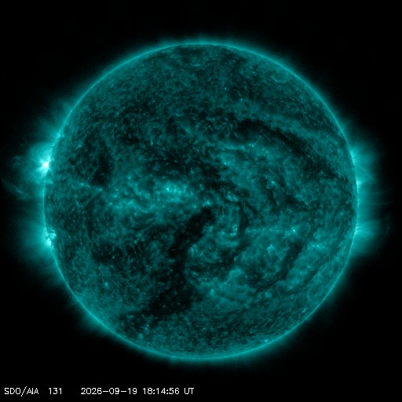
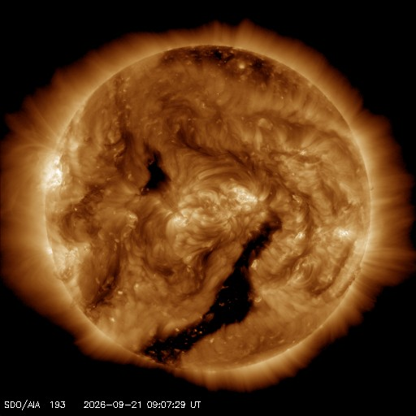
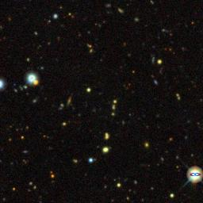
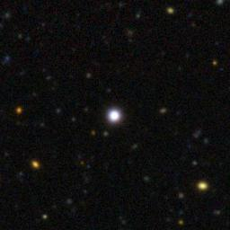

See what's happening in the sky right now
Exploding stars, solar flares, comets and planets around other stars. Real data from NASA, Rubin, ZTF and more, with every result explained in plain words.
Newest with pictures




Pictures marked archive were taken years before the event. The event itself is not in them.
Three ways in
Sky map
This week's events at their real places on a 3D sky. Filter by kind, open one to see its pictures and who reported it.
Open the sky mapLab
Small experiments on real stars. Take a star's temperature, hear its light as sound, rebuild Hubble's diagram, read chemical fingerprints.
Open the labFinder
Planet candidates from our nightly search of TESS light curves. See each dip and judge for yourself whether it looks like a planet.
See the candidatesStart with a famous star
| Star | Temperature | Size | Distance | Why it's famous |
|---|---|---|---|---|
| WASP-18TIC 100100827 | 6,432K | 1.32× Sun | 403ly | Its planet has about 10 times Jupiter's mass and goes round the star every 22.6 hours. |
| WASP-121TIC 22529346 | 6,628K | 1.46× Sun | 880ly | A year on WASP-121 b lasts 30.6 hours. Its day side is hot enough to turn metals into gas. |
| WASP-43TIC 36734222 | 4,400K | 0.60× Sun | 283ly | WASP-43 b circles its cool orange star every 19.5 hours, closer in than almost any other giant planet. |
| TOI-700TIC 150428135 | 3,459K | 0.41× Sun | 102ly | 4 known planets. TOI-700 d is 1.1 times Earth's width and orbits where liquid water could exist. |
How we stay honest
Real data only
Every event, star and light curve comes from a public observatory or catalogue. Test data carries a DEMO DATA tag.
Machine guesses are labelled
When a computer sorted something, we say so and show how sure it was, for example "82%, machine guess".
Candidate, never discovered
A dip in a star's light is a planet candidate until astronomers confirm it. We don't claim discoveries.